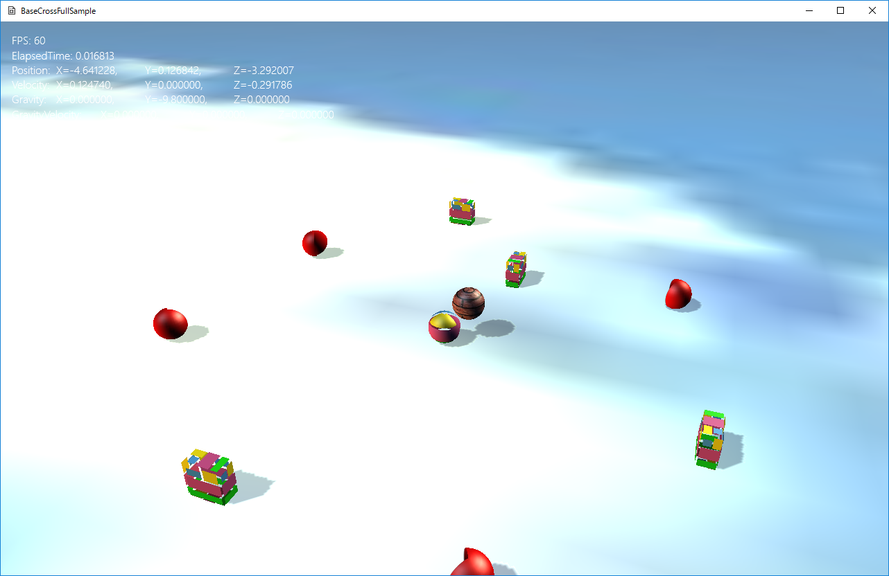

図0104a
１、行動の分岐を記述するのに、if文やswitch文のオンパレードになってしまう。 ２、敵のAIなどを記述する際、同じような行動も敵のクラス単位で記述しなければならず、 それは往々にして似たような処理を何度も記述する羽目になってしまう。
１、AステートのExit()関数を呼ぶ ２、BステートのEnter()関数を呼ぶ
３、BステートのExicute()関数を呼ぶ
１、ハートのアイテムは回転して、ライフを増やす ２、コインのアイテムは光りながら回転して、ポイントを増やす ３、魔法瓶にアイテムは、回転しながら煙が出て、魔力とライフをアップする ４、敵の魔法瓶アイテムを横取りすると、光りながら煙が出て、魔力とポイントをアップする
| 行動 | ハート | コイン | 魔法瓶 | 敵の魔法瓶 |
|---|---|---|---|---|
| 回転 | 〇 | 〇 | 〇 | |
| 光る | 〇 | 〇 | ||
| 煙 | 〇 | 〇 | ||
| ライフ | 〇 | 〇 | ||
| ポイント | 〇 | 〇 | ||
| 魔力 | 〇 | 〇 |
//--------------------------------------------------------------------------------------
/// Enemy1のNearステート
//--------------------------------------------------------------------------------------
class Enemy1NearState : public ObjState<Enemy1>
{
Enemy1NearState() {}
public:
//ステートのインスタンス取得
DECLARE_SINGLETON_INSTANCE(Enemy1NearState)
virtual void Enter(const shared_ptr<Enemy1>& Obj)override;
virtual void Execute(const shared_ptr<Enemy1>& Obj)override;
virtual void Exit(const shared_ptr<Enemy1>& Obj)override;
};
DECLARE_SINGLETON_INSTANCE(Enemy1NearState)
static shared_ptr<Enemy1NearState> Instance();
//--------------------------------------------------------------------------------------
/// Enemy1のNearステート
//--------------------------------------------------------------------------------------
IMPLEMENT_SINGLETON_INSTANCE(Enemy1NearState)
void Enemy1NearState::Enter(const shared_ptr<Enemy1>& Obj) {
}
void Enemy1NearState::Execute(const shared_ptr<Enemy1>& Obj) {
auto PtrArrive = Obj->GetBehavior<ArriveSteering>();
if (PtrArrive->Execute(L"Player") >= Obj->GetNearFarChange()) {
Obj->GetStateMachine()->ChangeState(Enemy1FarState::Instance());
}
}
void Enemy1NearState::Exit(const shared_ptr<Enemy1>& Obj) {
}
IMPLEMENT_SINGLETON_INSTANCE(Enemy1NearState)
shared_ptr<Enemy1NearState> Enemy1NearState::Instance() {
static shared_ptr<Enemy1NearState> instance;
if(!instance) {
instance = shared_ptr<Enemy1NearState>(new Enemy1NearState);
}
return instance;
}
static shared_ptr<Enemy1NearState> instance;
//--------------------------------------------------------------------------------------
/// 敵１
//--------------------------------------------------------------------------------------
class Enemy1 : public GameObject {
//中略
//ステートマシーン
unique_ptr<StateMachine<Enemy1>> m_StateMachine;
//中略
public:
//--------------------------------------------------------------------------------------
/*!
@brief ステートマシンを得る
@return ステートマシン
*/
//--------------------------------------------------------------------------------------
unique_ptr< StateMachine<Enemy1>>& GetStateMachine() {
return m_StateMachine;
}
//中略
};
//初期化
void Enemy1::OnCreate() {
//中略
//ステートマシンの構築
m_StateMachine.reset(new StateMachine<Enemy1>(GetThis<Enemy1>()));
//最初のステートをEnemy1FarStateに設定
m_StateMachine->ChangeState(Enemy1FarState::Instance());
}
void Enemy1::OnUpdate() {
//ステートによって変わらない行動を実行
auto PtrGrav = GetBehavior<Gravity>();
PtrGrav->Execute();
auto PtrSep = GetBehavior<SeparationSteering>();
PtrSep->Execute();
//ステートマシンのUpdateを行う
//この中でステートの切り替えが行われる
m_StateMachine->Update();
}
Obj->GetStateMachine()->ChangeState(Enemy1NearState::Instance());
１、Enemy1FarStateステートのExit()関数を呼ぶ ２、Enemy1NearStateステートのEnter()関数を呼ぶ
void Enemy1NearState::Execute(const shared_ptr<Enemy1>& Obj) {
auto PtrArrive = Obj->GetBehavior<ArriveSteering>();
if (PtrArrive->Execute(L"Player") >= Obj->GetNearFarChange()) {
Obj->GetStateMachine()->ChangeState(Enemy1FarState::Instance());
}
}
Obj->GetBehavior<行動クラス名>()
//--------------------------------------------------------------------------------------
/// ArriveSteering行動クラス
//--------------------------------------------------------------------------------------
class ArriveSteering : public SteeringBehavior {
public:
//--------------------------------------------------------------------------------------
/*!
@brief コンストラクタ
@param[in] GameObjectPtr ゲームオブジェクト
*/
//--------------------------------------------------------------------------------------
ArriveSteering(const shared_ptr<GameObject>& GameObjectPtr);
//--------------------------------------------------------------------------------------
/*!
@brief デストラクタ
*/
//--------------------------------------------------------------------------------------
virtual ~ArriveSteering();
//--------------------------------------------------------------------------------------
/*!
@brief 減速値を得る（デフォルト3.0）
@return 減速値
*/
//--------------------------------------------------------------------------------------
float GetDecl() const;
//--------------------------------------------------------------------------------------
/*!
@brief 減速値を設定する
@param[in] f 減速値
@return なし
*/
//--------------------------------------------------------------------------------------
void SetDecl(float f);
//--------------------------------------------------------------------------------------
/*!
@brief 行動を実行する
@param[in] TargetPos 追いかける位置
@return 追いかける位置との距離
*/
//--------------------------------------------------------------------------------------
float Execute(const Vector3& TargetPos);
//--------------------------------------------------------------------------------------
/*!
@brief 行動を実行する
@param[in] TargetKey 追いかけるオブジェクトのキー（SharedObjec）
@return 追いかけるオブジェクトとの距離
*/
//--------------------------------------------------------------------------------------
float Execute(const wstring& TargetKey);
private:
// pImplイディオム
struct Impl;
unique_ptr<Impl> pImpl;
};
float ArriveSteering::Execute(const Vector3& TargetPos) {
auto RigidPtr = GetGameObject()->GetComponent<Rigidbody>();
auto TransPtr = GetGameObject()->GetComponent<Transform>();
Vector3 Force = RigidPtr->GetForce();
Vector3 WorkForce;
WorkForce = Steering::Arrive(RigidPtr->GetVelocity(), TargetPos,
TransPtr->GetPosition(), RigidPtr->GetMaxSpeed(), pImpl->m_Decl) * GetWeight();
Steering::AccumulateForce(Force, WorkForce, RigidPtr->GetMaxForce());
RigidPtr->SetForce(Force);
auto Pos = TransPtr->GetPosition();
return Vector3EX::Length(Pos - TargetPos);
}
float ArriveSteering::Execute(const wstring& TargetKey) {
auto TargetPtr = GetStage()->GetSharedObject(TargetKey);
auto TargetPos = TargetPtr->GetComponent<Transform>()->GetPosition();
return Execute(TargetPos);
}
class TestBehavior : public Behavior {
public:
//--------------------------------------------------------------------------------------
/*!
@brief コンストラクタ
@param[in] GameObjectPtr ゲームオブジェクト
*/
//--------------------------------------------------------------------------------------
TestBehavior(const shared_ptr<GameObject>& GameObjectPtr) :
Behavior(GameObjectPtr)
{}
//以下、ほかのメンバ関数を作成する
//例: TestFunction();
void TestFunction();
};
void TestBehavior::TestFunction(){
auto Pos = GetGameObject()->GetComponent<Transform>()->GetPosition();
}
class TestBehavior : public Behavior {
//この行動のスピード
float m_Speed;
public:
//--------------------------------------------------------------------------------------
/*!
@brief コンストラクタ
@param[in] GameObjectPtr ゲームオブジェクト
*/
//--------------------------------------------------------------------------------------
TestBehavior(const shared_ptr<GameObject>& GameObjectPtr) :
Behavior(GameObjectPtr),
m_Speed(10.0f)
{}
//以下略
};
auto PtrTest = Obj->GetBehavior<TestBehavior>();
PtrTest->TestFunction();
//--------------------------------------------------------------------------------------
/// コントローラのボタンのハンドラ
//--------------------------------------------------------------------------------------
template<typename T>
struct InputHandler {
void PushHandle(const shared_ptr<T>& Obj) {
//コントローラの取得
auto CntlVec = App::GetApp()->GetInputDevice().GetControlerVec();
if (CntlVec[0].bConnected) {
//Aボタン
if (CntlVec[0].wPressedButtons & XINPUT_GAMEPAD_A) {
Obj->OnPushA();
}
}
}
};
//--------------------------------------------------------------------------------------
/// プレイヤー
//--------------------------------------------------------------------------------------
class Player : public GameObject {
//中略
//入力ハンドラー
InputHandler<Player> m_InputHandler;
public:
//中略
//Aボタンハンドラ
void OnPushA();
};
//Aボタンハンドラ
void Player::OnPushA() {
//Aボタンが押されたときの何かの処理
}
//更新
void Player::OnUpdate() {
//コントローラチェックして入力があればコマンド呼び出し
m_InputHandler.PushHandle(GetThis<Player>());
//ステートマシン更新
m_StateMachine->Update();
//中略
}
void PlayerDefaultState::Execute(const shared_ptr<Player>& Obj) {
auto PtrDefault = Obj->GetBehavior<PlayerBehavior>();
PtrDefault->MovePlayer();
}
//Aボタンハンドラ
void Player::OnPushA() {
if (GetStateMachine()->GetCurrentState() == PlayerDefaultState::Instance()) {
//通常ステートならジャンプステートに移行
GetStateMachine()->ChangeState(PlayerJumpState::Instance());
}
}
void PlayerJumpState::Enter(const shared_ptr<Player>& Obj) {
auto PtrJump = Obj->GetBehavior<JumpBehavior>();
PtrJump->StartJump(Vector3(0, 4.0f, 0));
}